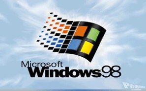
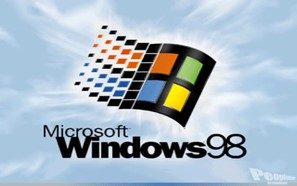

Avanços Tecnológicos
1995: Microsoft lança o Windows 95

1998: Nascem os CDs graváveis e regraváveis (CD-RW); Microsoft lança o Windows 98.
 

Filmes/Desenhos/Séries
1997: Satoshi Tajiri cria o Pokémon (anime)
Músicas de Sucesso
1995: morrem, num acidente aéreo, todos os integrantes do grupo musical Mamonas Assassinas.
Acontecimentos Diversos
1999: o euro passa a circular em 11 países da União Europeia.